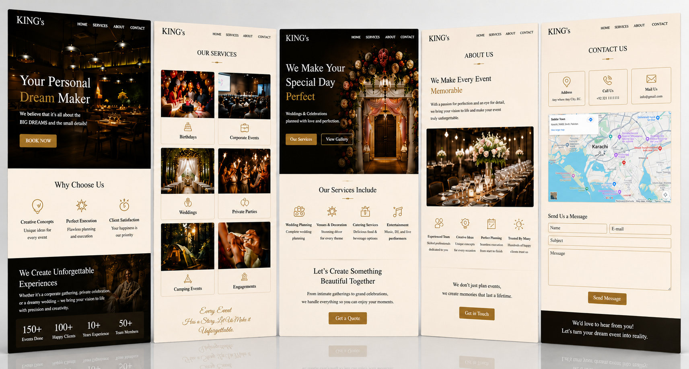

BoostSecurity is a DevSecOps platform that helps engineering teams find and fix security vulnerabilities across the entire software development lifecycle. Purpose-built for developers, BoostSecurity integrates directly into CI/CD pipelines and dev workflows, providing automated security scanning, policy enforcement, and risk prioritization, all without slowing down the development process.
Project:
King's
Client:
DevSecOps SaaS
Timeline:
Ongoing
Live site:
King'sScope:
Full Website Redesign, Webflow Development, Custom Interactive Components, Animated Architecture Section, Product Tour with Spotlight & Tooltips, CMS Collections, Blog Setup, Micro-Interactions System

BoostSecurity operates in one of the most competitive and technically demanding SaaS categories: developer security tooling. The existing website needed a ground-up redesign that could communicate a complex, multi-layered platform to both engineering leaders evaluating tools and developers who would use them daily.
DevSecOps platforms compete against well-funded incumbents with substantial design budgets. Our Webflow design and development capabilities were directly tested by this level of complexity and visual expectation.
We executed a complete website redesign for BoostSecurity on Webflow, combining custom component engineering, brand system implementation, and CMS architecture into an ongoing, evolving engagement.
Custom interactive components inside Webflow embeds represent some of the most technically challenging work in the Webflow ecosystem. Our SaaS website design expertise is built for exactly this type of engineering-grade implementation.
For SaaS and DevSecOps companies looking to invest in a Webflow website that communicates technical depth with visual precision, talk to our team or explore our SaaS website design service.
BoostSecurity is one of the most technically ambitious Webflow builds in our portfolio. The combination of custom interactive components, including a product tour with spotlight mechanics and an animated architecture diagram, pushed the boundaries of what is achievable inside Webflow embeds. This is the type of project that demands both engineering discipline and design instinct, and we are proud to continue delivering on both as the engagement evolves. For SaaS companies with complex products and high visual standards, explore our full Webflow service offering.